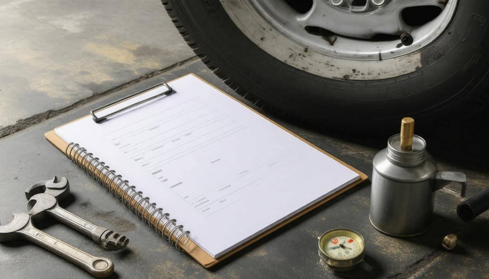

Regular Fleet Vehicle Maintenance Practices Boost Efficiency and Safety
Maintaining a fleet of vehicles is more than just ensuring they look good and run well; it’s about creating a safe environment for everyone on the road. You might be wondering, “What does regular maintenance really do for my fleet?” Well, it not only boosts efficiency but also plays a crucial role in keeping drivers and other road users safe. In my experience, putting time and effort into vehicle upkeep can save money down the line by avoiding unexpected breakdowns and repairs. Imagine your delivery truck suddenly braking down in the middle of a busy street—chaos could ensue! By sticking to smart maintenance practices, you’ll make sure your vehicles are always ready for action, ultimately benefiting your bottom line. Let’s dive into some essential practices every fleet manager should adopt to keep their operations running smoothly.
Regular fleet vehicle maintenance practices include routine inspections, scheduled maintenance based on manufacturer recommendations, and meticulous documentation of services performed. These practices are essential for enhancing efficiency, ensuring safety compliance, prolonging vehicle lifespan, and preventing costly repairs within your fleet.
Creating a Maintenance Schedule

Establishing a precise maintenance schedule means considering both the unique demands of your fleet and industry best practices. The first step in this process is to assess fleet needs. Each vehicle in your fleet has its own purpose, driving patterns, and manufacturer specifications. For instance, consider a fleet of delivery vehicles that regularly navigate city streets filled with stop-and-go traffic; these vehicles will endure significantly different wear and tear compared to trucks used solely for long hauls or those parked for days at a time. By evaluating these factors, you can tailor your maintenance schedule to fit the specific requirements of each type of vehicle, ensuring nothing gets overlooked.
Next comes the critical task of setting maintenance intervals. This step involves establishing a clear timeline for various maintenance activities that aligns with manufacturer recommendations and the unique needs you've assessed. A study from the National Institute for Automotive Service Excellence suggests commonly accepted intervals—like oil changes every 5,000 miles or brake inspections every 12,000 miles—as benchmarks. However, it’s crucial to adjust these timelines based on driving conditions and operational demands. For example, if you find that your delivery trucks are accruing mileage at an accelerated pace, you should consider more frequent check-ups to catch potential issues before they escalate into costly repairs.
After determining intervals tailored to your fleet's needs, the next logical step involves optimizing how you manage reminders for these services.
Automating reminders can be a game-changer. By utilizing fleet management software solutions from Teletrac Navman, you can automate service alerts based on calculated mileage or time intervals. This shift not only minimizes human error but also ensures that essential services aren't forgotten amid the fast-paced demands of day-to-day operations. Imagine being able to receive notifications on when brakes are due for inspection without manually tracking every vehicle’s service history—that efficiency is key in maintaining optimal operations.
As you refine this scheduled approach to maintenance, remember that it's an ongoing process requiring updates and adjustments along the way. Monitoring vehicle performance through real-time diagnostics enables you to fine-tune these schedules as necessary. Not only do regular assessments help in sustaining the longevity of your vehicles, but they also significantly enhance safety across your entire fleet.
With a clear maintenance schedule established and automated reminders set up, you're now equipped to keep track of upcoming check-ups efficiently. Next comes the actionable part: defining specific checks that ensure each vehicle remains running at an optimal level while complying with all relevant regulations.
By honing in on these critical routine assessments, you'll build a stronger foundation for operational excellence within your fleet.
Essential Routine Checks
Regular routine checks allow fleet managers to catch minor issues before they snowball into costly repairs or even accidents. It’s akin to checking your birdhouse for small cracks before the storm rolls in. Minor fixes today can save significant time, resources, and disruptions tomorrow.
Each component plays its role in maintaining efficiency; skipping these checks can jeopardize your entire operation.
When inspecting fleet vehicles, focusing on four essential areas yields the best results:
- Fluid Levels: Regular checks of brake fluid, engine oil, coolant, and windshield washer fluid are crucial. Weekly maintenance ensures that these fluids are always at optimal levels. Low brake fluid can compromise stopping power, while insufficient engine oil may cause overheating or engine failure.
- Brakes: Inspect brake pads and discs monthly. Worn-out brakes not only compromise safety but also significantly increase repair costs when left unchecked. A simple inspection can help identify wear patterns, ensuring timely replacements.
- Tires: Maintaining proper tire pressure and tread depth is vital for fuel efficiency and overall vehicle performance. Conduct checks every two weeks—overinflated or under-inflated tires can lead to increased fuel consumption and unsafe driving conditions.
Lights and Signals: Functional lights are essential for safe road navigation. Make it a habit to verify that all headlights, brake lights, turn signals, and hazard lights are operational with each visit to the garage.
Incorporating these simple checks has been known to significantly reduce unscheduled maintenance incidents—a fleet manager noted improvements up to 30% after implementing consistent inspections.
As you implement these routine checks in your fleet management practices, it’s important to consider how maintaining internal components directly contributes to overall performance. Attention to detail not only enhances safety but also extends the life of critical systems within your vehicles.
Maintaining Engine and Components
One cannot underestimate the critical nature of engine maintenance, as it directly impacts both the performance and lifespan of fleet vehicles. Regular attention to engine health should be a top priority in any fleet management strategy, as the engine is essentially the heart of each vehicle. Imagine going through the motions of daily operations, only to find that neglecting your engine has led to unexpected breakdowns and costly downtime. Keeping an eye on essential components can make all the difference.
Routine checks need to include monitoring vital elements like the turbocharger and intercooler. These components, particularly in heavy-duty vehicles, encounter considerable stress and are known for wear over time. Just think about it: if you overlook these parts, you're setting yourself up for a disaster when they fail unexpectedly. The consequences could involve not just repairs but also a significant impact on productivity. It’s best to stay ahead by cleaning fuel injectors regularly as well; this small act helps maintain fuel efficiency and optimize engine performance.
Notably, many fleet managers underestimate how beneficial scheduled diagnostics can be. You might think of them as an unnecessary expense, but early detection of potential issues is invaluable when avoiding large repair costs down the line. For example, catching a misaligned spark plug early could save hundreds in repairs rather than waiting for it to affect more significant engine components.
As part of regular care, don’t forget routine inspections on the fuel system, as well. Checking fuel filters will help in understanding whether they need replacement—generally every 20,000 to 40,000 miles depending on the vehicle and the type of fuel used. Pay close attention because dirty fuel filters can lead to decreased fuel flow and ultimately hinder overall performance.
Understanding these foundational practices sets the stage for managing other crucial aspects of fleet maintenance, where attention to different types of components further enhances operational efficiency.
Tires, Oil, and Fluids Management

Let's first examine the importance of tire health, which plays a pivotal role in fleet performance. Maintaining the right tire pressure is crucial—not just for safety but also for your bottom line. You might be surprised to learn that the U.S. Department of Energy states that keeping tires properly inflated can improve fuel efficiency by up to 3.3%. This means significant savings over time, especially for fleets where every drop of fuel counts.
To keep your tires in top shape, make it a standard practice to check tire pressure regularly.
Additionally, rotating your tires every 6,000 to 8,000 miles ensures even wear and extends the life of your tires. Another key point: once the tread depth falls below 4/32 inches, it’s time to replace them. Allowing tires to degrade further can impair safety and lead to costly accidents or breakdowns.
Now that we've covered tire health, let’s turn our attention to oil and fluid management—the lifeblood of any vehicle.
Regularly checking oil levels is paramount. Aim to replace oil approximately every 5,000 miles to maintain engine health and performance. Monitoring other critical fluids like transmission and differential fluid is equally important; adhere strictly to your manufacturer’s recommendations for replacements. These practices help ensure smooth operation of fleet vehicles while mitigating risks associated with mechanical failure.
One insightful fleet manager I spoke with mentioned that implementing consistent fluid checks not only streamlined their maintenance process but also resulted in a remarkable 25% reduction in vehicle downtime. By treating oil and fluid management as essential indicators of vehicle condition, they saved both time and money.
Embracing these procedures fosters a proactive culture in fleet management that prioritizes both efficiency and driver safety. Next, we'll explore the significance of maintaining accurate records for these vital procedures, ensuring all necessary actions are documented properly.
Keeping Accurate Maintenance Records
Accurate maintenance records are indispensable for tracking each vehicle's service history and ensuring compliance with safety regulations. This isn't just about filing cabinet aesthetics or neat spreadsheets; it’s about building a system that works for you and protects your investment. Imagine needing to pull up the service history of a vehicle that just broke down; with accurate and accessible records, you can quickly identify past issues or necessary repairs, making it easier to get back on the road.
Benefits of Accurate Records
It’s interesting to note that a study revealed fleets maintaining meticulous records experienced 50% fewer breakdowns. That's how powerful this practice can be! Further, let’s explore three key benefits from keeping these records accurately documented:
- Compliance: Maintaining accurate records helps you meet regulatory requirements set by local authorities. A documented history of inspections and services can save you during audits and ensure you pass compliance checks without a hitch.
- Resale Value: If you're ever in the position of selling or trading in vehicles, well-maintained records can significantly increase their resale value. Potential buyers see documented evidence of proper care, which can reflect positively regarding reliability.
- Predictive Maintenance: Historical data allows fleet managers to forecast future maintenance needs effectively. This means you can identify patterns—or red flags—related to specific types of repairs or component failures before they lead to costly breakdowns.
A 2019 report indicated that poor record-keeping could lead to an estimated 15% increase in operational costs, underscoring how essential accurate documentation truly is.
While maintaining accurate records may initially seem like an added chore, these efficient practices streamline everything from daily operations to long-term strategy. As we turn our focus now to further aspects of compliance and safety measures, understanding these elements becomes critical for effective fleet management.
Ensuring Safety Compliance
Safety compliance is not merely a regulatory box to check; it's deeply intertwined with protecting lives on the road. Regular vehicle maintenance practices are at the core of this importance. Keeping vehicles in prime condition goes beyond aesthetics; it significantly impacts safety for drivers, passengers, and other road users.
The rigorous standards set by organizations such as the Federal Motor Carrier Safety Administration (FMCSA) and the Occupational Safety and Health Administration (OSHA) demand that commercial fleet operators adhere to safety inspections and maintenance protocols.
Navigating local regulations concerning emissions and safety can seem daunting, yet these requirements are essential for maintaining lawful operation. Failure to comply exposes fleets to fines and severe implications for vehicle reliability and driver safety. For instance, if a vehicle's brakes are not checked regularly, the potential for accidents rises—placing lives at risk.
According to reports from the National Highway Traffic Safety Administration (NHTSA), 94% of serious crashes arise from human error, highlighting the pressing need for regular vehicle checks alongside comprehensive driver training programs.
Regulatory Compliance
To ensure compliance, key activities must be performed consistently:
- Brake Inspections: Monthly checks can prevent disastrous accidents, assuring that brakes are fully functional.
- Emission Testing: Conducted annually, these tests help fleets remain compliant with stringent environmental regulations while contributing to sustainability initiatives.
- Driver Safety Training: Quarterly training sessions are invaluable in reducing human error—a substantial factor in collisions.
One effective way to manage this compliance landscape is through telematics. This innovative technology allows fleet managers to track real-time data on vehicle conditions, identifying unsafe driving behaviors and ultimately leading to reduced accident rates. Studies suggest that implementing telematics can decrease incidents associated with unsafe driving habits by as much as 20%.
| Maintenance Task | Frequency | Compliance Benefit |
|---|---|---|
| Brake Inspection | Monthly | Prevents road accidents |
| Emission Testing | Annually | Ensures adherence to local environmental standards |
| Driver Safety Training | Quarterly | Lowers the risks linked to human error |
Finally, collaborating with experts such as Fuel Consults can alleviate challenges faced in maintaining compliance. These professional services craft tailored solutions designed specifically for fleet management needs, streamlining vehicle upkeep while ensuring all safety standards are diligently met. By leveraging the expertise offered by such partners, fleet operators can focus on their primary goals while confidently navigating the complexities of safety regulations.
Ensuring rigorous compliance not only enhances safety but also fosters a culture of responsibility throughout the organization. This commitment is vital for long-term operational success.